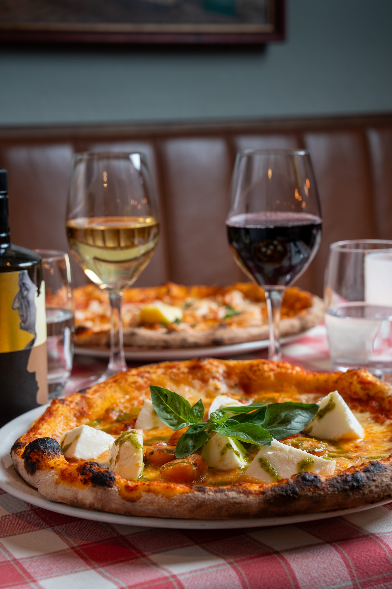
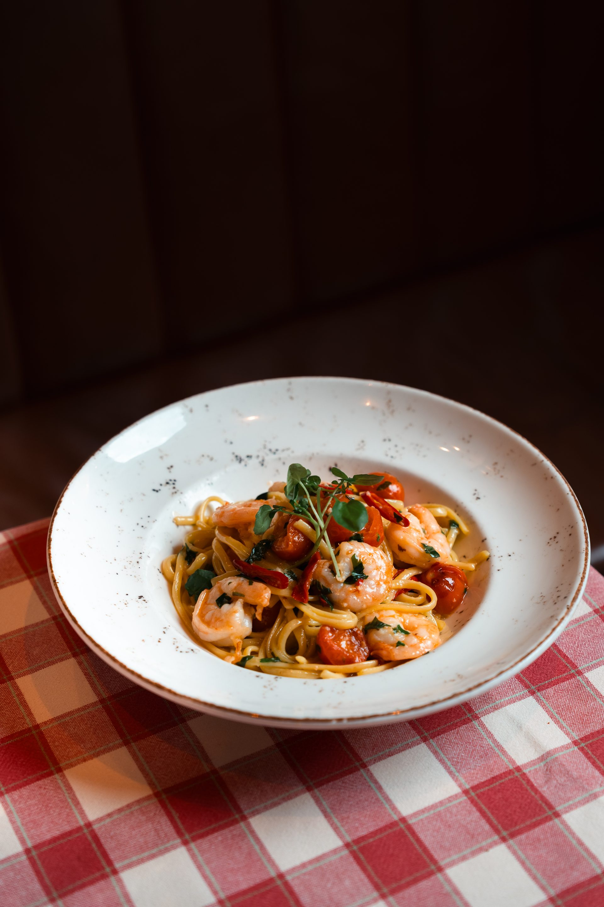
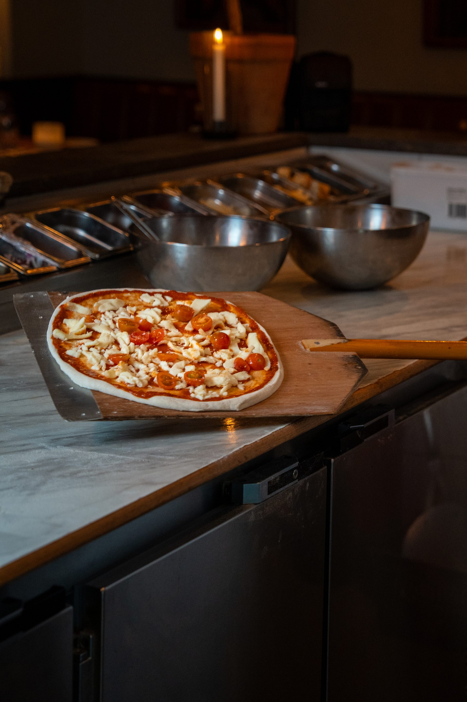
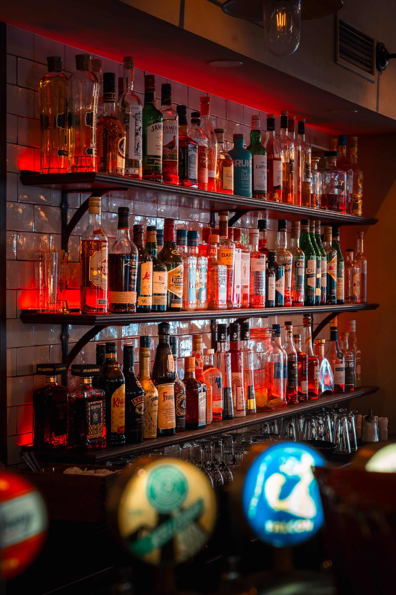

Veckans Lunch
Ny meny varje dag — en vegetarisk och en med kött eller fisk. Sallad, bröd, soppa och kaffe ingår.
Mån – Fre : 11:00 – 14:00
Se LunchmenynVästerlånggatan 72, Gamla Stan — Stockholm
Mitt på Västerlånggatan, i ett hus som stått här i ett halvt årtusende, serverar Agaton ärlig italiensk mat sedan 1999. Vedugnspizza, handgjord pasta och ett glas vin som smakar av eftermiddagssol i Toscana — i hjärtat av Gamla Stan.
Agaton grundades på en enkel övertygelse: att det godaste från Sverige omfamnar det godaste från Italien. Med fokus på säsongens råvaror och nyckelingredienser direkt från Italien, håller vi fast vid det löftet varje dag, i varje tallrik.



Agaton grundades på en enkel övertygelse — att det godaste från Sverige omfamnar det godaste från Italien. Sedan 1999 håller vi fast vid det löftet, varje dag, i varje tallrik.
Med fokus på säsongens råvaror arbetar vi nära lokala producenter och importerar nyckelingredienser direkt från Italien för att bevara de genuina smakerna. Vedugnen är hjärtat — allt annat bygger därifrån.
Läs mer om oss



Upplev det bästa Agaton har att erbjuda. Boka din upplevelse idag!
Boka NuNy meny varje dag — en vegetarisk och en med kött eller fisk. Sallad, bröd, soppa och kaffe ingår.
Mån – Fre : 11:00 – 14:00
Se LunchmenynFirar ni något stort? Vi tar emot sällskap upp till 60 gäster och skapar en kväll ni aldrig glömmer.
Alla dagar : från 17:00
Läs MerI ett hus som nämnts sedan 1521, på samma adress sedan 1999. Lär känna berättelsen bakom Agaton.
Gamla Stan sedan 1999
Läs Mer+46 08 20 72 99